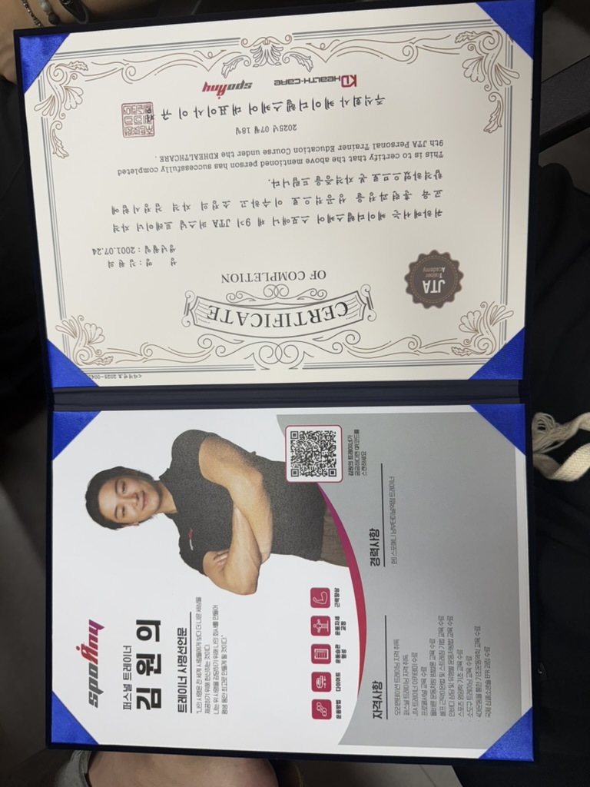

The reason I went undercover
In the summer of 2025, I got the opportunity to work at SpoAny as part of a three-month project. SpoAny is a large fitness chain in South Korea with over 100 locations in Seoul alone.
My role wasn't just to be an office worker. I visited both high and low-revenue branches to find out what was different, how they were operating, and what problems HQ didn't know about. It was a complete secret that I was dispatched from HQ. While working as an actual trainer, I submitted reports to HQ every week.
Researching competitors was also part of my job. I went to other gyms pretending to be a regular customer, got consultations, and tried personal training sessions. I even counted the number of visitors during evening hours. It was necessary to find out why a particular branch was doing well and why it wasn't doing well.
What the data didn't show
The fitness industry's retention figures are already clear. Roughly one-third of gym members leave each year, and half of new members quit within six months of signing up. HQ was aware of these numbers too.
But what I felt while working as a trainer myself was different. There were things that didn't appear in the data. The real reasons why members were leaving, the atmosphere between trainers and members, and the detailed realities of branch management were nowhere in the reports. That's when I first learned that working as a trainer was much more difficult than I thought.
You can't see culture in a spreadsheet
The numbers said one branch was underperforming. But when I worked there, I understood why. There were things that didn't appear in the data. The real reasons why members were leaving, the atmosphere between trainers and members, and the detailed realities of branch management were nowhere in the reports.
You can't measure that in a spreadsheet. You have to be there and do the work yourself to understand what's really happening.
Data is a starting point, not an answer
HQ looked at churn rates and saw a problem. But the data couldn't tell them *where* the problem was or *why* it existed. That required being on the ground, talking to people, and actually doing the work.
I counted evening visitors at competitor gyms. I listened to what members complained about during consultations. I felt the difference between a well-run branch and a badly-run one.
None of that would have shown up in a quarterly report.
The one thing this taught me
Statistics tell you what's happening, but not why. I've stopped blindly trusting data since that day. There are things you can only see by going there and doing the work yourself.
If you want to understand a business, don't just read the reports. Work there. Talk to the people. Feel the culture. That's where the real insight lives.

SpoAny Overseas Manager Credential